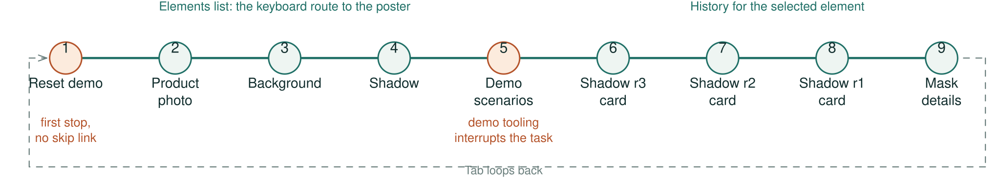

Lineage · Case study · Interaction design
Recover the shadow.
Keep the progress.
Lineage lets a designer bring back one approved element from an earlier version, with everything it depends on, without losing the work done since. Before anything is saved, it shows exactly what will change and what will stay.
- Timeline
- 3 weeks, solo, with AI-assisted coding for the prototype
- Scope
- One end-to-end recovery flow on one poster: 3 selectable elements, compare, preview, recover, undo, plus every failure state
The recovery preview. The approved shadow is shown inside today's poster, with what will change, what will stay and what is required together, all before the designer commits.
01 · The problem
The lead approved a soft shadow. An AI edit made it heavier. The rest of the poster moved on.
Now the team wants that approved shadow back, without undoing the new background and wording.
21 Oct · approved✓ Approved
Hand-refined shadow, signed off by the creative lead
25 Oct · todayToo heavy
Newer background and wording the team wants to keep
What happened to each part
| Part | Since approval | The team wants |
|---|
| 1 | Shadow + its mask | AI-assisted edit made it heavier. The tool used was not recorded. | The approved one back |
| 2 | Background | Regenerated twice, warm sand to soft teal | Keep the new one |
| 3 | Wording | “Hydrating face serum” became “Calm skin, all day.” | Keep the new one |
| Product photo | Unchanged | Keep |
Today, both ways back lose something
Restore the old file
✓ Shadow comes back
✕ New background and wording are lost
Rebuild the shadow by hand
✓ Looks close
✕ Not the artwork that was approved
The shadow also only looks right with the mask it was made with, and nothing on the poster shows that link.
Why this matters now
1
AI edits multiply versionsEach AI pass adds a version between the approved one and the one on screen. Here, one AI edit replaced the approved shadow.
2
The record has gapsAn AI edit may not record the tool or prompt behind it. Here, the heavier shadow has no tool on record.
3
Approval doesn't travelThe sign-off covered the shadow on a different poster. Copied into today's design, it can look approved when nobody has reviewed it.
02 · Constraints
Solo, three weeks, AI-assisted. So I chose one flow and made it complete.
SoloSole designer, from framing to the audit
3 weeksFraming, prototype, refinement and accessibility audit
AI-assistedPrototype code written with AI coding tools
Constraints, and what I decided because of them
| Constraint | Decision |
|---|
| Three weeks, one designer | One poster, three elements and one linked mask, built end to end rather than spread thin across many features |
| Only recorded, separate artwork can be copied | Copy the stored original, or refuse if it is missing |
| Records can be incomplete | Show “Not recorded” wherever a fact is missing |
| Saved in one browser, one editor at a time | Any change to the poster during a preview forces a fresh preview |
| Must work without a mouse | An Elements list is the keyboard route; status always has a text label alongside colour |
Deliberately out of scope
| Live AI generation | AI outputs are pre-recorded, so recovery is the only thing being judged |
| Multiplayer and accounts | One editor at a time; the flow assumes no one else edits mid-preview |
| Capture from other apps | Depends on integrations beyond a prototype |
| Rebuilding flattened art | Can't be done faithfully, so the product refuses |
| Rights and authenticity | A history record doesn't prove how art was made (C2PA) |
| User testing | Not run yet; the prototype is built to be tested next |
03 · Research and the landscape
Selective restore already exists. The decision around it doesn't.
Before designing, I checked whether this was solved: three HCI studies, the leading professional tools and the C2PA provenance standard.
| Restore | Decision context |
|---|
| Find the right
version | Keep later
work | Show what must
come with it | Show what the
approval covered |
|---|
| Photoshop History Brush | | | | |
| Cloud version history | | manual extraction | | |
| Layers and saved copies | if well named | | | |
| HistoryPalette research tool, 2025 | in place | | | |
| Content Credentials (C2PA) | | n/a | | records claims, not proof |
| Lineage | by element | | | then vs now |
YesPartlyNoMy reading of public documentation and papers, not a hands-on benchmark.
The insight
Tools can bring old work back. None I reviewed show what that will do to today's design.
What the desk review changed
Selective undo, CHI 20156 of 9 participants expected to use it often; 3 said layers were enough. Existing workarounds are the real competitor.
Creative version control, CSCW 202218 interviews: old versions are material to reuse. Organise around the element, not the file.
HistoryPalette, 2025In-place preview and reuse already exist. Focus on dependencies, approval and what stays.
C2PA guidanceA record of how something was made doesn't prove it. Keep facts, statements and unknowns apart.
04 · Insight, question and principles
One insight, one question, three principles
Each design decision later in this case study traces back to one of these principles.
Insight
Recovery is a judgement call.
Finding the old artwork is the easy part. The hard part is judging what it will do to today's design.
→
How might we
…help a designer recover a previously approved element while understanding its dependencies, its evidence gaps and its effect on the current design?
PRINCIPLE 1
Make scope visible
Before saving, a designer can say what will change, what will stay and what has to come along.
- In practice
- Try the old shadow on in today's poster. The preview lists Will change, Will stay and Required together.
- Cost I accepted
- More to read in the dialog
D3 Compare vs recoverD5 Mask as dependency
PRINCIPLE 2
Keep history accountable
History only grows, and every fact stays attached to the version it is true for.
- In practice
- Approval stays on the revision it was given for. Undo adds a new version instead of erasing one.
- Cost I accepted
- Longer history; even an exact copy needs a new sign-off
D2 Approval staysD4 Receipt and undo
PRINCIPLE 3
Prefer an explicit stop
If something required is missing or unknown, say so and stop. Never swap in something close.
- In practice
- A missing mask blocks recovery and names the reason. An unrecorded tool shows as “Not recorded”.
- Cost I accepted
- More dead ends for the user
D1 Evidence labelsD5 Mask as dependency
05 · Exploring directions
Four ways back to the approved shadow
I judged each recovery approach on the same four questions.
| Approach | Same artwork
as reviewed? | Keeps later
work? | Result
predictable? | Buildable
now? | Why it lost or won |
|---|
| A. Restore the whole earlier posterFamiliar file-level rollback | | | | | Too broadBrings back the shadow, but also reverts the background and wording the team wants to keep. |
| B. Replay the earlier editsRebuild a past state step by step | | | | | Can't promise itNeeds a complete, reliable log of every edit and dependency. |
| C. Ask AI to recreate the shadowGenerate something that looks close | | | | | New artworkA close match still isn't the reviewed artwork, so it would need a new review anyway. |
| D. Copy the recorded snapshotShadow plus its mask, as stored | | | | | ChosenCopies known, stored artwork into new revisions. The rest of the poster is kept. |
YesNoDepends on data the prototype can't guarantee
Why the snapshot won
- It makes the narrowest promise the product can keep: copy what was stored and reviewed, or refuse when that isn't possible.
- It is the only option that is yes on all four questions.
What it costs
- Flattened or unrecorded artwork can't be recovered, so the product has to say no clearly (principle 3).
06 · Key design decisions · 1 of 5
D1
Evidence labels: “Not recorded” is an answer
- Problem
- An AI-assisted edit may not capture the tool or prompt behind it. In the demo, no tool was recorded for the heavier shadow.
- Options
- One merged provenance list
- Hide fields that are empty
- Three labelled groups
- Choice
- Recorded by the system, Declared by a collaborator and Unknown sit in separate blocks. A missing tool reads “Tool: not recorded”.
- Trade-off
- More labels to read on every version
Principle 3 · Prefer an explicit stop
The AI-edited shadow. A collaborator's note never looks like a verified fact, and the gap stays visible.
06 · Key design decisions · 2 of 5
D2
Approval stays with the original revision
- Problem
- The lead approved shadow-r2 on an older poster. Since then the background, mask and wording have all changed. A green badge on a copy would state a true fact in a misleading place.
- Options
- Carry the approval forward
- Ask the designer each time
- Approval stays put; every copy needs review
- Choice
- The approval names who signed off and when, shows the poster they actually saw, and compares then with now. Every recovered copy starts as Needs review.
- Trade-off
- Even an exact copy needs another sign-off
Principle 2 · Keep history accountable
“This covers shadow-r2 in the composition below. It does not approve the current poster.”
06 · Key design decisions · 3 of 5
D3
Compare and recover are separate actions
- Problem
- Designers need to try the old shadow on before committing, and must know nothing is saved while they look.
- Options
- Hover preview (mouse-only, fleeting)
- Apply inline from the history card
- Compare on the canvas, then recover from a preview
- Choice
- Compare only changes the view, with three cues: a blue frame, a “Preview only, nothing is saved” label and a caption. Saving happens only in the preview dialog. Radio buttons switch the view, so it works by keyboard.
- Trade-off
- One more step before recovering
Principle 1 · Make scope visible
The approved shadow inside today's poster. Everything else stays as it is now.
An explicit switch, then “Preview recovery”.
06 · Key design decisions · 4 of 5
D4
A recovery gets a receipt. Undo adds a version.
- Problem
- Rolling the whole poster back would erase unrelated work done since. Deleting the recovery would leave a gap in the history.
- Options
- Undo deletes the recovery
- Roll back the whole poster
- Undo saves a new version
- Choice
- A receipt appears only after the save succeeds: the new versions, what they were copied from and Needs review. Undo saves another version that brings back the previous shadow.
- Trade-off
- “Undo” means something slightly unfamiliar, and history gets longer
r2approved
→
r3AI edit
→
r4copy of r2
→
r5undo: copy of r3
Principle 2 · Keep history accountable. The approval stays on r2.
After saving: the receipt
After undo: r5 is added, nothing is erased
06 · Key design decisions · 5 of 5
D5
The mask is a dependency, not a top-level item
- Problem
- The shadow only looks right with the mask it was made with, and nothing on the poster shows that link. The designer is after the shadow; the mask matters only because the shadow needs it.
- Options
- A fourth selectable element
- Quietly reuse today's mask
- A required pair with the shadow
- Choice
- The Elements list shows “shadow-r3 with mask-r2”. The preview names the mask under Required together. If the mask is missing, recovery stops and says why.
- Trade-off
- The mask is less visible as something you can pick
Principles 1 and 3 · Make scope visible, prefer an explicit stop
Three elements; the mask rides with the shadow
The preview says why the mask comes too
If the mask is missing, recovery is blocked. Today's mask is never swapped in.
07 · End-to-end flow
One path to a recovery, and a named exit at every check
Nothing is saved until the designer presses “Recover”. The system checks three times along the way, and every exit leaves today's work as it was.
Check 1 · building the previewIs the source artwork stored? Is its mask stored? Was it made for today's photo position?
Check 2 · on “Recover”Has the poster, the approval or the evidence changed since the preview? Did the save succeed?
Check 3 · before undoHas the recovered shadow or its mask been edited since? If so, undo would overwrite newer work.
08 · Edge cases and failure states
Nine ways a recovery can stop, each designed
Every state can be triggered on demand from the prototype's demo panel, so I built and reviewed each one.
| Situation | Caught | What the person sees | Next step |
|---|
| F1 | Source artwork missing | Preview | “…cannot be recovered because its source asset is unavailable.” | Another version, or redo by hand |
| F2 | Linked mask missing | Preview | “…cannot be recovered because its linked mask is unavailable.” | Another version. Today's mask is never used |
| F3 | Photo has moved | Preview | “This shadow was made for a different product position.” | — |
| F4 | Background changed after preview | Recover | “The poster changed after this preview.” | Build a fresh preview |
| F5 | Approval withdrawn after preview | Recover | Same text as F4; original approval record kept | Build a fresh preview |
| F6 | Evidence corrected after preview | Recover | Same text as F4 | Build a fresh preview |
| F7 | Save fails | Recover | “…could not be saved, so nothing was changed.” No success shown | Try saving again |
| F8 | Recovered shadow edited, then undo | Undo | “Undo is unavailable; choose a new recovery instead.” | Recover again |
| F9 | Typography clicked | Select | “Typography is protected poster content.” | None needed |
F1: refuses instead of substituting, with one safe action.
F7: the dialog stays open and nothing is changed.
08 · Edge cases and failure states
I audited my own error copy. Two messages failed.
Each blocked-state message should answer four questions, without blaming the person.
| Message | What
happened | Why | What is
safe | Next
step | No
blame |
|---|
| F1 Source unavailable | | | | | |
| F2 Mask missing | | | | | |
| F3 Photo position | | | | | |
| F4 Preview out of date | | | | | |
| F5, F6 Approval or evidence changed | | | | | |
| F7 Save failed | | | | | |
| F8 Undo unavailable | | | | | |
YesPartlyImplied, not statedNo
What the audit found
- F3 is the weakest. It doesn't say the current photo is safe, and it offers no next step.
- F5 and F6 say the wrong thing. They reuse “The poster changed” when it was the approval or the evidence that changed.
- F1, F2 and F8 imply safety instead of stating it.
Checked in the prototype
- All nine states trigger on demand and show the copy on the previous page
- Stored data is unchanged after F1 to F8 (reload and inspect)
- No success message or receipt appears when a save fails
- Focus moves into each dialog, stays inside, and returns on Escape
- Status words such as Needs review and Unavailable always appear alongside colour
09 · Iteration
Building it changed the specification
Each change came from building the prototype and reviewing it in a real browser.
1
The test passed, but the screen was wrong
- Noticed
- A hidden-state check passed in a simulated page while a CSS rule made the real interface wrong.
- Changed
- I now check the rendered app in a browser as well as the underlying rules.
2
The difference was too small to see
- Noticed
- Two full posters side by side made the shadow change nearly invisible.
- Changed
- Added enlarged shadow crops under each poster. The dialog got taller, but the decision became visible.
3
Too many things competed for attention
- Noticed
- Nested tinted frames, several drop shadows, uppercase labels and 14px body text.
- Changed
- One level of containment, white surfaces with hairline dividers and quieter labels.
4
An accessibility fix broke accessibility
- Noticed
- Making the page behind the dialog inert broke focus return on Escape.
- Changed
- Remove the inert state before returning focus. Browser tests caught the regression.
2 Enlarged crops added to the preview
3 History panel, before and after the visual pass
Before: tinted, nested card
After: white surface, one border
10 · Accessibility
Recovery shouldn't require a mouse
I audited four key states with axe-core 4.10.2 and a scripted Playwright keyboard walkthrough in Chromium.
| Check | Result |
|---|
| WCAG 2.2 A/AA automated rules | 0 violations in the default, compare and receipt states. 1 serious in the recovery dialog: its scrolling body can't be reached by keyboard. |
| Dialog focus | Focus moves in; 30 of 30 Tab presses stay inside; Escape returns focus to the button that opened it. |
| Status without colour | Needs review, Will change and Unavailable always appear as words alongside colour. |
| Reduced motion | No transitions or animations under reduced-motion settings. |
| Reflow | No horizontal scroll at 1440, 1024, 720 or 390px. |
| Visible focus | A 2px outline on every stop. |
Fix list from the audit
| High | Make the dialog body keyboard-scrollable and labelled. This fixes the one serious violation. |
| High | Point aria-describedby at a one-line summary of what will change. |
| Medium | Add a skip link to Elements; move Reset and demo controls to the end of the tab order. |
| Medium | Rewrite the canvas hint so it leads with the keyboard: “Choose an element from the list, or click it on the poster.” |
The keyboard route, as measured

11 · Reflection
Looking back
What I'd keep, what I'd change, and what this project taught me.
What worked
- Narrowing the promise. “Copy what was recorded, or refuse” made every later decision easier to explain and to test.
- Designing the “no” states early. Writing the failure rules first meant blocked states were designed.
- Checking the rendered screen. Two of my four iterations only surfaced because I looked at the real interface.
What I'd do differently
- Talk to designers before building. The approval model rests on teams approving individual elements. A few short conversations would have tested that early.
- Design the reviewer's side alongside the designer's. The lead's half of the loop is still unbuilt.
- Run an accessibility scan on every build. The one serious dialog issue would have been caught sooner.
What I learned
Accurate data can still mislead.An approval badge that is technically correct tells the wrong story once it travels to a new poster.
A refusal is a design surface.Blocked states got the same care as the main path: exact copy, current work kept safe, and a next step.
Recover the shadow. Keep the progress.
Lineage · Mahima Shastry